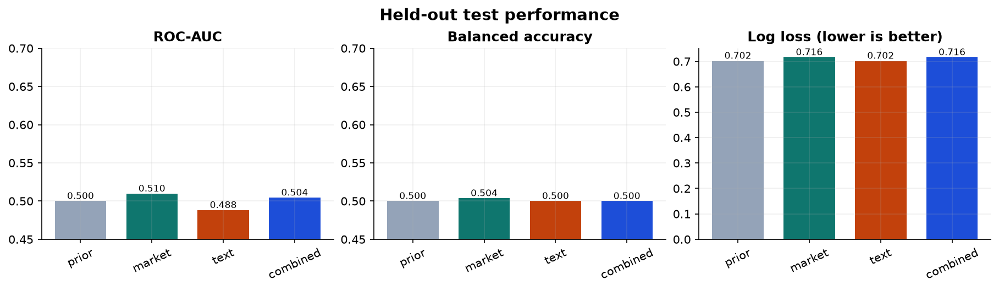
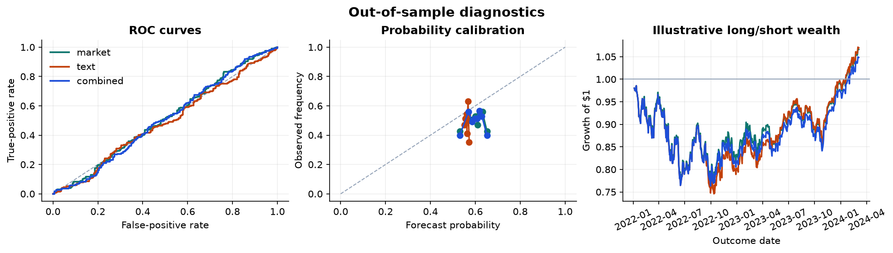

Train
805 datesOutcomes through 2019Fit candidate pipelinesMachine learning · empirical finance · reproducible research
Information
or Noise?
Do daily financial headlines add out-of-sample information for forecasting S&P 500 returns—or does the apparent signal disappear under a credible information clock?
Locked-test finding: no reliable incremental text signal
542untouched test dates
Jan 2022–Mar 2024
Jan 2022–Mar 2024
0.504combined-model
test ROC-AUC
test ROC-AUC
0.00004log-loss gain over market-only
95% CI [−0.00111, 0.00112]
95% CI [−0.00111, 0.00112]
0.94HAC p-value for
the incremental text effect
the incremental text effect
01
A forecast needs a clock.
The original data has dates, but not reliable publication times. Treating every day-t headline as tradable at the day-t close would overstate what the model knew.
The reconstruction assumes all day-t headlines become usable only at the close of t+1, then predicts the close-t+1 to close-t+2 return. This conservative one-session lag defines the information set before any model is fitted.
Feature datetHeadlines dated t
prices through close t
→
prices through close t
Executiont + 1Enter after a full
session of delay
→
session of delay
Outcomet + 2Evaluate the next
close-to-close return
close-to-close return
02
Protect the future.
Vocabulary, scaling, model selection, and evaluation are separated chronologically. Boundary observations whose outcomes cross a split are purged.
Validate
503 dates2020–2021Select regularization onlyLocked test
542 dates2022–March 2024Evaluate exactly oncePrior
Historical up-frequency
Market
Lagged return, momentum, volatility, news count
Text
Train-only TF–IDF with regularized logistic regression
Combined
Market and text blocks fitted jointly
03
The locked test rejected the optimistic story.
| Model | ROC-AUC | Balanced acc. | Log loss ↓ | Brier ↓ |
|---|---|---|---|---|
| Historical prior | 0.500 | 0.500 | 0.7022 | 0.2545 |
| Market-only | 0.510 | 0.504 | 0.7160 | 0.2610 |
| Text-only | 0.488 | 0.500 | 0.7023 | 0.2545 |
| Market + text | 0.504 | 0.500 | 0.7160 | 0.2610 |
Adding text to market features changes paired log loss by only 0.00004. Its moving-block-bootstrap interval contains zero, and the Newey–West/HAC p-value is 0.94. Both the market-only and combined specifications are significantly worse than the historical prior on log loss.


04
What changed—and why.
- 01
Observable target
Future return replaces full-sample HMM states whose economic meaning and forecast timing were unclear.
- 02
Chronological evaluation
Outcome-aware splits replace random tweet-level splits that can mix dates and correlated observations.
- 03
Valid ablation
A market-direction prediction is no longer relabeled as linguistic sentiment; text is tested as an explicit information block.
- 04
No leaky stacking
One-stage pipelines replace a stack trained on in-sample first-stage predictions but tested on out-of-sample predictions.
- 05
Paired uncertainty
Saved predictions, bootstrap intervals, HAC tests, input hashes, and a frozen configuration replace screenshot accuracy.
The portfolio lesson
A credible null beats a fragile 75%.
A model that fails to beat a historical prior is informative when the test is protected. The result narrows the claim and establishes what better timestamped data or richer language models would still need to prove.